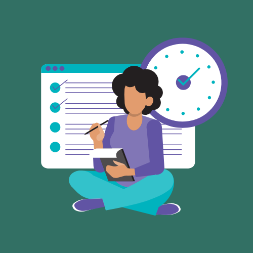
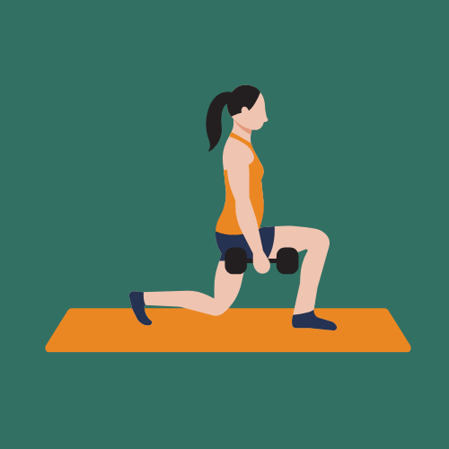
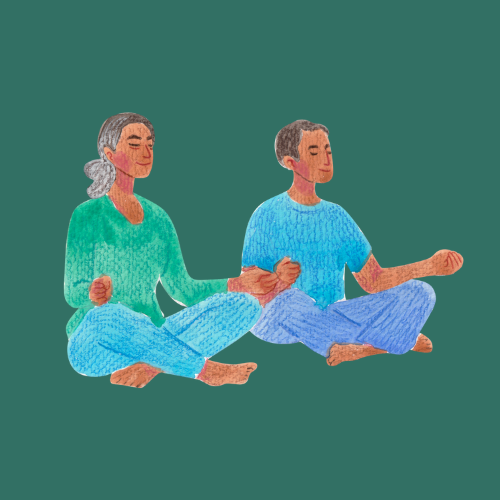
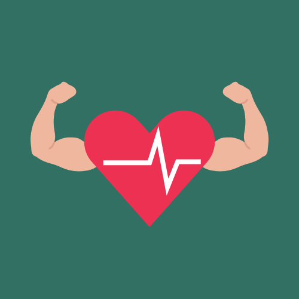
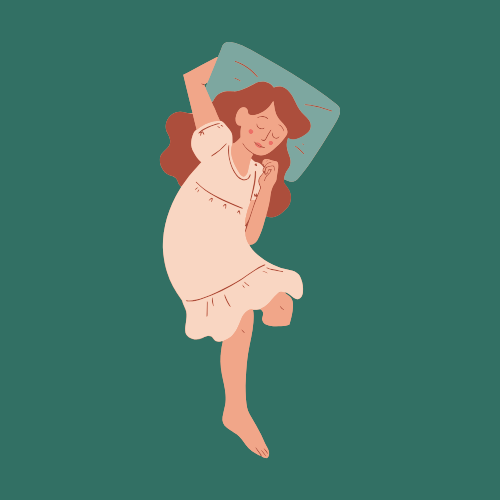
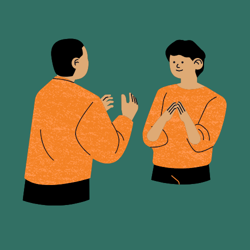
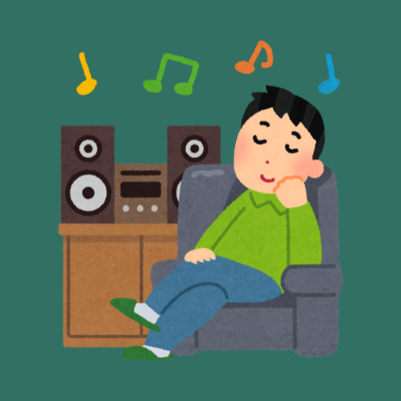
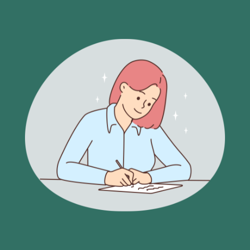
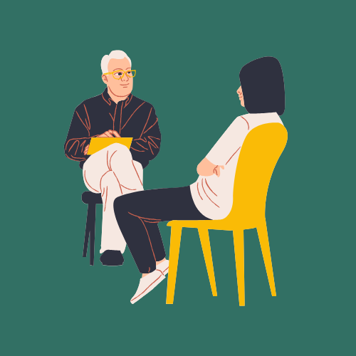

1. Organiza tu tiempo

Prioriza tareas: Usa listas de tareas y establece qué es lo más urgente e importante. Divídelas en pasos más pequeños para hacerlas más manejables.
Establece límites: Aprende a decir "no" cuando no puedas asumir más responsabilidades.
2. Realiza actividad física regularmente

El ejercicio libera endorfinas que mejoran el ánimo y reducen la tensión. Camina, corre o realiza estiramientos.
3. Técnicas de relajación

Mindfulness: Dedica unos minutos al día para meditar o practicar la atención plena. Esto reduce el estrés y mejora tu bienestar.
Respiración profunda: Inhala profundamente, mantén el aire unos segundos y exhala lentamente para activar tu sistema nervioso parasimpático.
4. Mantén una dieta saludable

Una dieta equilibrada influye positivamente en tu estado emocional. Evita el exceso de cafeína y azúcar.
5. Duerme lo suficiente

Establece una rutina de sueño regular para descansar entre 7 y 9 horas por noche. El descanso es esencial para reducir el estrés.
6. Mantén conexiones sociales

Hablar con amigos y familiares es una excelente forma de liberar tensiones. Asegúrate de disfrutar de relaciones saludables.
7. Haz cosas que disfrutes

Dedica tiempo a actividades que te relajen, como leer, escuchar música o pintar.
8. Practica la gratitud

Reflexiona sobre lo positivo de tu vida. Anotar tres cosas por las que estés agradecido cada día puede reducir el estrés.
9. Busca apoyo profesional si es necesario

Hablar con un terapeuta o consejero puede proporcionarte herramientas personalizadas para manejar el estrés.
10. Establece momentos de desconexión
Reduce el uso de pantallas, especialmente antes de dormir, para evitar la sobrecarga de información.